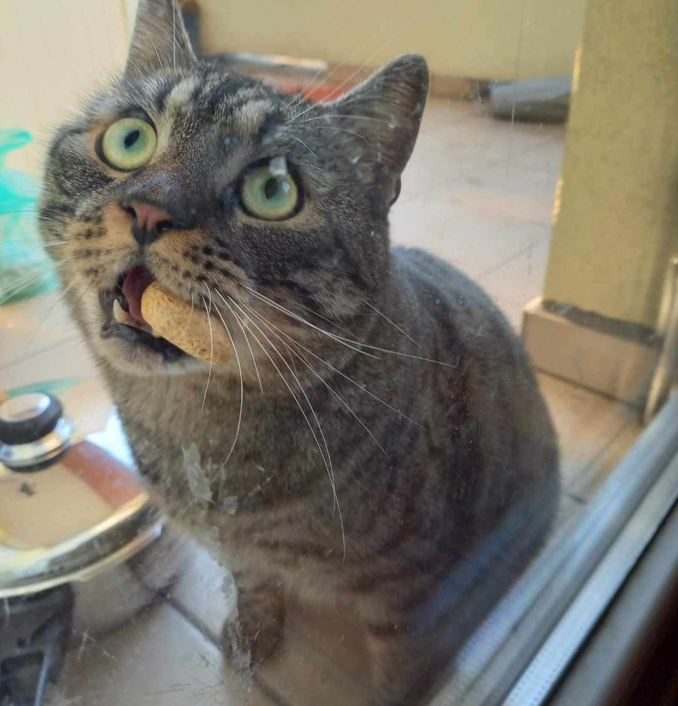
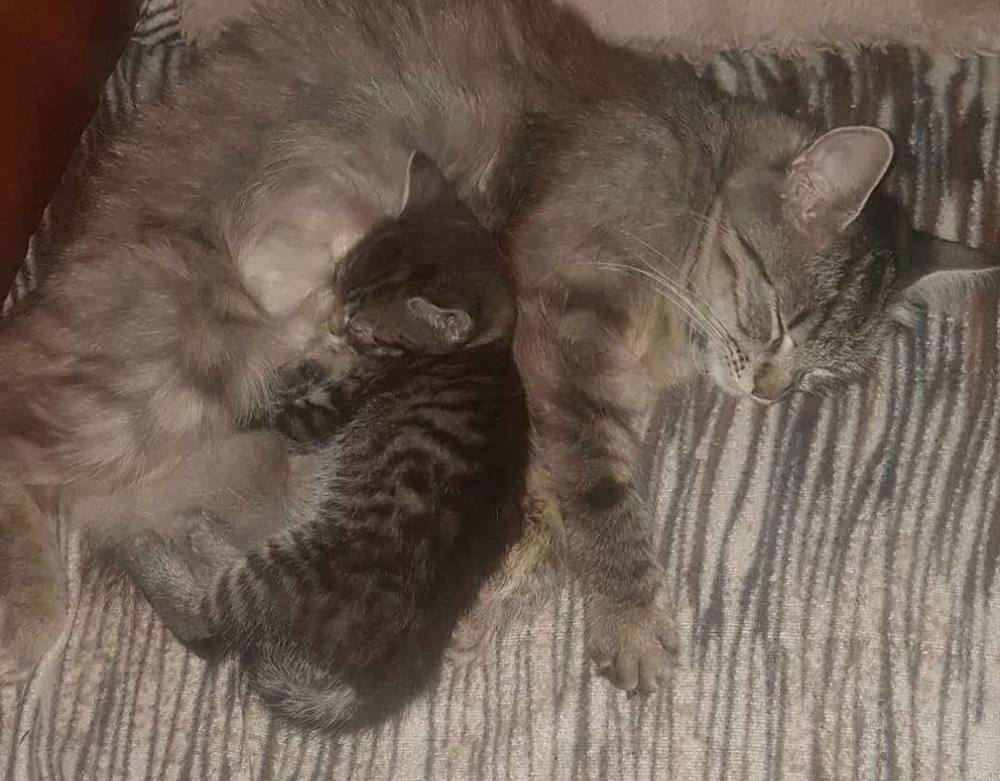
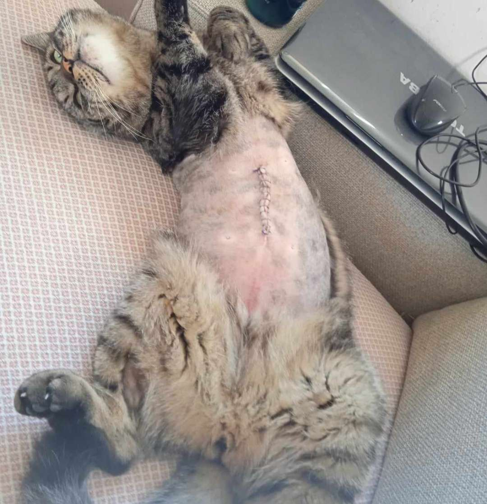

Érdekességek a macskámról

Szereti az olivabogyót
Szeret jutalomfalatért kuncsorogni
Szeret lent lenni a kertben

Mit csinál egy nap?
Reggel, miután felkel, megreggelizik és a bejárati ajtónál ülve arra vár, hogy lemehessen a kertbe (WC-re).
Délután feljön, megebédel, alaposan megmosdik és a szárítógépben szunyál egy nagyot.
Este játszunk vele, tésztát kell neki dobálni. Vacsora után anyám párnáján alszik reggelig
Honnan került hozzánk?
Anyukám Albertirsáról hozta 8 hetes korában. Egykeként született, két kutyával nevelkedett
Mikor pici volt, horkolt.


Putyinka élettörténetei
Ha a macskáknak tényleg 7 élete van, akkor ő már 4-et elvesztett.
3 szor leesett a erkélyről, semmi baja nem lett.
A negyedik balesete majdnem végzetes lett, de 2 órás műtéttel meg tudták menteni az életét. Most jól van, boldog cica ^^
| Reggel | Délben | Este |
|---|---|---|
| Sheba Nedves Macskatáp | Száraz Macskatáp | Félix Nedves Macskaeledel |